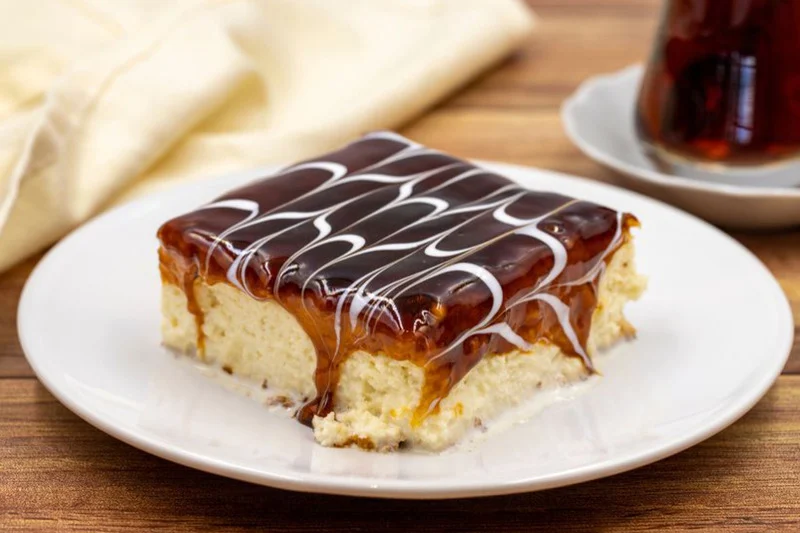

TRILECE

Ingredients
- 400 ml of sweet cream
- 400 ml of condensed milk
- 800 ml normal milk
- 300 grams of caramel cream
Steps
- Whisk the white and gradually add the sugar and vanilla sugar. When they are well whipped add egg yolks one by one, mix adn slowly add the flour
with a baking powder. When you add flower then turn off the mixer at the weakest speed and just shake it slightly.
- Mixture pur into a baking tray coated with paper and bake for about 20-25 min on 180 degrees. Allow it to cool slightly,
then remove it from the pan and stab it with a knife in a lot of places. Pour a sweet cream into the pan and then lay a cake upside down.
Leave t o stand for about 10 minutes, then shake the milk and condensed milk and pour it above the cake. Let it rest and soak and coat
with tha caramel. Serve it cold.